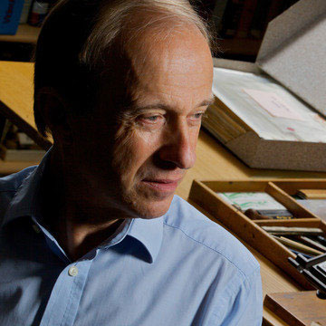

a web-safe font that was designed by Robin Nicholas and Patricia Saunders for Microsoft to compete with the blocky sans-serif look of Helvetica.
Aa Bb Cc Dd Ee Ff Gg Hh Ii Jj Kk Ll Mm Nn Oo Pp Qq Rr Ss Tt Uu Vv Ww Xx Yy Zz
"Deep into that darkness peering, long I stood there, wondering, fearing, doubting, dreaming dreams no mortal ever dared to dream before."
-Edgar Allan Poe
Designed in 1992, it was introduced in Windows 3.1 as "an alternative to Helvetica".
1 2 3 4 5 6 7 8 9 0
"The numerical digits we use today, such as 1, 2 and 3, are based on the Hindu-Arabic numeral system developed over 1000 years ago."
-Balint
It was designed purposely to be a bland and almost "boring font" admitted by designer Robin Nicholas in 2005.
. , _ - ! ? / @ & * $ % # ( ) [ ] { }
"Cry “havoc!” and let slip the dogs of war"
-Shakespeare's "Julius Caesar"
This, though it sounds like a negative, makes Arial a perfect web safe font since it is basic and is owned by most people at home
Styles
Regular
Bold
Italic
Bold Italic
Type with Arial...

Robin Nicholas
Born in Westerham, Kent, England, in 1947, Robin Nicholas has worked with fonts and typefaces nearly all his adult life. Following a brief stint as an apprenticeship draftsman, he joined the Monotype Type Drawing Office while still a teenager. After his initial training at Monotype, Nicholas redrew master artwork for typefaces licensed for the company’s